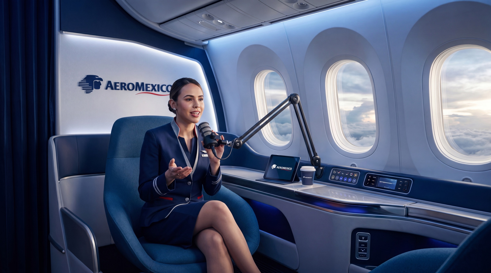

$2,400
Paquete 1 · Marco Teórico (35 min + 3 cápsulas)

Un programa de entrenamiento con producción cinematográfica: video 100% generativo en 4K, guiado por la voz de marca de Aeroméxico. Cada concepto del Way of Work no se cuenta — se muestra: la cabina, el squad, la ceremonia, la experiencia del pasajero. Formal, actualizable sin re-grabar y listo para LMS.
Aeroméxico impulsa grupos Agile de transformación digital — equipos interdisciplinarios que reúnen lo mejor de cada área para sacar adelante proyectos que llevaban tiempo detenidos. Funcionan, pero hay dolores reales que frenan su adopción:
Se imparten a la manera tradicional — una persona con un PowerPoint en un salón. El resultado: la gente está en el celular
y no retiene nada. El formato perdió la atención del equipo.
Si cambia una política, un rol o un proceso, hay que volver a montar el shooting completo. El contenido queda obsoleto por miedo al costo de actualizarlo.
Usar la imagen de alguien real implica derechos de imagen, renovaciones y exposición: si la persona renuncia o cambia, el programa queda comprometido. La respuesta: nadie en cámara — una voz de marca propia guía todo el programa.
Sin una experiencia que termine en evaluación, no hay forma de demostrar que el equipo realmente puso atención y completó el módulo.
Aeroméxico está transformando su forma de trabajar. Los grupos Agile necesitan un programa de entrenamiento que esté a la altura de esa transformación — no una persona parada frente a un PowerPoint mientras el equipo mira el celular.
ARDE propone un formato sobrio y cinematográfico: una voz de marca que guía + metraje 100% generativo en 4K. Cada idea del Way of Work se ve — la cabina, el squad, la ceremonia, la experiencia del pasajero — en video fotorrealista con la estética Aeroméxico, sin depender de nadie en cámara.
Sobre esa identidad audiovisual se produce el programa completo: marco teórico, roles y ceremonias. Misma voz, mismo estilo, mismo nivel — siempre.
| Bloque | Contenido | Piezas |
|---|---|---|
| PUNTO 0 | Dirección de arte e identidad audiovisual — moodboard, estilo gráfico, escenarios y voz de marca | Sistema de identidad |
| PAQUETE 1 | Entrenamiento General — Marco Teórico (Aeroméxico Way of Work), 3 módulos | 1 video de 35 min + 3 cápsulas modulares |
| PAQUETE 2 | Roles — Build the Team | 8 contenidos de 3 min |
| PAQUETE 3 | Ceremonias | 1 genérico + 8 cortos de 30 seg |
| NUEVO | Entrenamientos IT — interacción con IT y uso de Jira | Por definir alcance |
Motor de producción: Seedance 2.0 en 4K (metraje cinematográfico 100% generativo) + ElevenLabs (voz de marca clonada), bajo metodología Human-Directed de ARDE: cada pieza pasa por dirección y curaduría humana antes de entregarse.
Tiempo total estimado: 7–8 semanas.
Este es el cimiento de todo el programa. Antes de producir un solo video, se define y aprueba el universo visual y sonoro completo. Una vez aprobado, ese sistema queda bloqueado (Style Lock) y se mantiene idéntico en las 21 piezas del programa — mismo estilo, misma voz, mismo nivel, siempre.
Sin personajes ni presentadores: una voz institucional propia y un sistema visual de marca. No se clona a ninguna persona real ni se depende de un talento que pueda renunciar o dejar de estar disponible.
| Moodboard & estilo gráficoLook & feel del programa · paleta · tipografía en pantalla · rotulación · motion style | $1,700 |
| Diseño de escenariosSet de escenarios virtuales de marca · múltiples propuestas · incluye escenarios de aviación fotorrealistas | $1,900 |
| Voz de marcaCasting de voz · diseño de personalidad sonora · clonación ElevenLabs · voz exclusiva de Aeroméxico | $1,400 |
| SUBTOTAL PUNTO 0USD · 1.5 semanas | $5,000 |
El corazón del programa: un video maestro de máximo 35 minutos en formato horizontal 16:9, estructurado en 3 módulos de ~10 minutos más apertura y cierre, donde la voz de marca presenta el marco teórico completo del Aeroméxico Way of Work.
Por qué no se va a sentir como una capacitación: el problema de las capacitaciones tradicionales no es la duración — es el formato estático. Aquí no hay diapositivas ni cabezas parlantes: es metraje cinematográfico continuo dirigido plano a plano.
| Video maestro 35 min · 16:9 · 4KMetraje 100% generativo Seedance 2.0 4K + dirección cinematográfica + voz de marca · 3 módulos · aprobación por módulo | $15,700 |
| 3 cápsulas modulares (~10 min c/u)Versión modular del maestro aprobado · intro y cierre por cápsula | $1,500 |
| SUBTOTAL PAQUETE 1USD · 4 semanas tras aprobación de identidad | $17,200 |
Ocho contenidos de máximo 3 minutos cada uno, diseñados para responder una sola pregunta con total claridad: ¿qué hace cada rol en el modelo Agile de Aeroméxico?
Cada pieza mantiene el estándar del programa: la voz de marca presenta y el metraje cinematográfico ejemplifica el rol en acción dentro del contexto Aeroméxico — el formato corto garantiza atención completa. Son piezas independientes: sirven para el onboarding de una persona nueva a un rol específico sin que tenga que ver el programa completo.
| 8 contenidos × 3 min1 genérico + 7 por rol específico · $1,650 c/u · metraje generativo 4K + voz de marca + ejemplificación por rol | $13,200 |
| SUBTOTAL PAQUETE 2USD · 2 semanas | $13,200 |
| R·01 | Genérico — los roles del modelo y cómo se conectan | 3 MIN |
| R·02 | Initiative Owner | 3 MIN |
| R·03 | Strategic Program Manager | 3 MIN |
| R·04 | Squad Manager | 3 MIN |
| R·05 | Transformation SCRUM Coach | 3 MIN |
| R·06 | IT Business Partner | 3 MIN |
| R·07 | Product Owner | 3 MIN |
| R·08 | Subject Matter Expert (SMA) | 3 MIN |
El bloque de consumo más rápido del programa: 1 contenido genérico (~2–3 min) que explica el sistema de ceremonias completo, y 8 contenidos cortos de máximo 30 segundos — uno por ceremonia.
Las piezas de 30 segundos son el formato perfecto para el refuerzo continuo: se consumen en el celular, se comparten por los canales internos, se reproducen antes de la ceremonia real como recordatorio de formato.
Es la respuesta directa al dolor original: "la gente está en el celular" — entonces el contenido vive en el celular.
| 1 genérico de ceremonias~2–3 min · visión completa del sistema de ceremonias | $1,500 |
| 8 cortos × 30 segUna pieza por ceremonia · $520 c/u · formato vertical-ready para canales internos | $4,160 |
| SUBTOTAL PAQUETE 3USD · 1.5 semanas | $5,660 |
Bloque nuevo solicitado por Aeroméxico: piezas cortas de entrenamiento sobre la operación con el equipo de IT dentro del modelo Agile. El alcance anticipado — sujeto a la definición del equipo IT — contempla:
Producción con el mismo estándar del programa: flujos de pantalla de la herramienta + metraje de contexto generativo + voz de marca. Precio de referencia por pieza de ~5 minutos: $2,100–2,400 USD. Una vez confirmado el detalle con el equipo IT, este bloque se cotiza en firme y se integra al cronograma sin afectar los plazos de los Paquetes 1–3.
| Interacción con IT~5 min · flujo de trabajo squad ↔ IT · referencia | $2,100–2,400 |
| Uso de Jira~5 min · screen-flows + contexto + voz de marca · referencia | $2,100–2,400 |
| ESTIMADO BLOQUE ITUSD · se confirma con el alcance definitivo | ~$4,200–4,800 |
| PUNTO 0 | Identidad audiovisual — moodboard + estilo gráfico + escenarios + voz de marca | $5,000 |
| PAQUETE 1 | Marco Teórico — video 35 min + 3 cápsulas modulares | $17,200 |
| PAQUETE 2 | Roles — 8 contenidos × 3 min | $13,200 |
| PAQUETE 3 | Ceremonias — 1 genérico + 8 cortos de 30 seg | $5,660 |
| SUBTOTAL | Alcance completo con SMA integrado (21 piezas) | $41,060 |
| AJUSTE | Tarifa de cierre · cuenta Aeroméxico | – $3,560 |
| PROGRAMA | Programa completo · 21 piezas + sistema de identidad | $37,500 |
| SCORM 1.2 | Add-on · 21 piezas en SCORM 1.2 listas para subir + test de acreditación (MP4 incluido) | $3,500 |
| TOTAL | Programa + SCORM 1.2 | $41,000 USD |
Todos los valores están expresados en USD (dólares estadounidenses). Cada paquete puede contratarse de forma independiente una vez ejecutado el Punto 0. El SCORM 1.2 es un cobro único: una vez entregado (video incrustado), queda de Aeroméxico para siempre; las 21 piezas se entregan en SCORM + MP4. Los entrenamientos IT se cotizan y suman aparte al confirmar su alcance (~$4,200–4,800 estimado).
Este valor corresponde al primer programa de un total de ocho. La Fase 1 (sistema de identidad audiovisual y el video maestro) se realiza y se paga una sola vez: es la base de todo el ecosistema. Los 7 programas restantes mantienen el mismo valor de las fases que se repiten en ellos. Si alguno incluye contenidos adicionales o de naturaleza distinta, su valor se recotiza al momento de continuar con cada uno, revisándolo en detalle de forma individual.
La voz de marca creada en el Punto 0 es multilingüe por diseño: habla inglés (o el idioma que se requiera) con la misma identidad sonora. Y como el metraje es generativo — sin nadie en cámara — no hay lip-sync que rehacer ni nada que re-rodar: se traduce y adapta el guion, se regenera la voz en el nuevo idioma, se remezcla y cada pieza pasa por QA de pronunciación.
Equivale a ~12% del valor de producción original por idioma. El comparativo tradicional: una versión en inglés del mismo programa sería una segunda producción completa (re-rodaje con talento bilingüe o doblaje) — entre $100,000 y $200,000 adicionales. Plazo por idioma: 1–2 semanas sobre material aprobado.
Hagamos el ejercicio honesto. El programa completo suma ~65 minutos de contenido terminado con múltiples escenarios y metraje cinematográfico de contexto aeronáutico. En producción tradicional con agencia, el mercado 2025–2026 cotiza el video de entrenamiento live-action profesional entre $1,500 y $5,000 USD por minuto terminado (promedio agencia: $3,000–5,000/min).
| ~65 min de contenido terminado × $1,500–3,000/min | $97,500 – $195,000 |
| Locución profesional + derechos de uso interno perpetuo | $5,000 – $12,000 + renovaciones |
| Set de cabina de avión (mockup profesional en Los Ángeles, ~$930 USD/hora) + traslado de crew, o gestión de aeronave real en tierra con permisos y seguridad | $15,000 – $40,000 |
| Locaciones adicionales (hangar, counter, salas, oficinas) — permisos, arte, props, jornadas de rodaje | $20,000 – $50,000 |
| Actores para recrear ejemplos (ceremonias, escenas de servicio, equipos trabajando) | $10,000 – $25,000 |
| TOTAL TRADICIONAL · Tiempo de producción: 4 – 6 meses | ~$150,000 – $320,000 |
Cambió una política, un nombre de rol, un paso de la ceremonia. En tradicional eso significa: re-convocar crew, talento y locación, replicar vestuario e iluminación exactos para que el corte no se note, y pagar entre $15,000 y $40,000 por ronda de actualización — si el talento sigue disponible. Con el modelo generativo, se reescribe el guion del segmento afectado y se regenera solo ese bloque. Misma voz, mismo estilo, mismo escenario, costo marginal. El contenido nunca queda obsoleto por miedo al costo de actualizarlo.
Un presentador humano implica derechos de imagen negociados, buyouts que se renuevan, y exposición real: si la persona renuncia, cambia físicamente, o tiene un problema reputacional, todo el programa de entrenamiento queda comprometido. En este programa no hay nadie en cámara: la voz de marca es 100% sintética y exclusiva de Aeroméxico, y el metraje es generativo — fue exactamente la preocupación que el equipo de Aeroméxico puso sobre la mesa.
Nadie deja un avión en tierra para grabar una capacitación. La alternativa tradicional son los sets profesionales de cabina (concentrados en Los Ángeles, desde ~$930 USD/hora solo el set, más viajar crew y talento) o rodar en instalaciones reales con permisos, seguridad y ventanas operativas. En el modelo ARDE, la cabina, el hangar, la sala de abordaje o la torre de control son escenarios fotorrealistas del Punto 0: se diseñan una vez, se aprueban, y quedan disponibles para las 21 piezas y para todo lo que venga después. Querer un escenario nuevo no es una negociación de locación — es una iteración de diseño.
La diferencia entre una capacitación que funciona y una que aburre es mostrar cada concepto: el squad en su ceremonia, el Product Owner priorizando, la experiencia del pasajero que el Way of Work busca mejorar. En tradicional, cada ejemplo es una escena con actores, locación y jornada de rodaje — por eso los videos corporativos terminan siendo una persona hablando frente a un fondo. Con Seedance 2.0 en 4K, todo el programa es metraje cinematográfico (~300+ clips dirigidos) que ejemplifica cada concepto de manera hiperreal, dentro del presupuesto base.
Aeroméxico opera rutas internacionales y equipos bilingües. En tradicional, la versión en inglés es una segunda producción ($100,000–$200,000 adicionales). La voz de marca habla inglés con la misma identidad sonora y el metraje no se toca: el programa completo en un idioma adicional cuesta $4,600.
¿Módulo nuevo el próximo trimestre? En tradicional: producción nueva completa. Con la identidad audiovisual ya construida, un contenido nuevo de 3 minutos cuesta $1,650 y está listo en días — igual que los entrenamientos IT que se sumarán a este programa. El Punto 0 es una inversión que se amortiza con cada pieza futura.
La IA es el motor. Los humanos son los pilotos. Cada pieza del programa pasa por:
El material temático de Aeroméxico se convierte en guion audiovisual con estructura narrativa.
Definición de planos, escenarios, ritmo y tomas de apoyo por segmento. Nada se genera sin dirección.
Seedance 2.0 en 4K (metraje cinematográfico) + ElevenLabs (voz de marca), operados por el equipo de dirección ARDE.
Nada que no cumpla el estándar sale del estudio.
Revisión de sync, audio, color y formato; entregas por paquete, no un volcado final.
Una voz de marca 100% propia, contenido cinematográfico que se actualiza sin volver a grabar, y todo con la calidad de producción que la marca Aeroméxico merece.